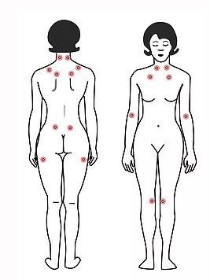

Our Mission
Here at Fibromyalgia Ireland – We plan to provide all sufferers of Fibromyalgia and Chronic pain with advice, tips & tricks on dealing with Pain, Natural Remedies, some Fibro Life “Hacks” and as much Support as we can offer. Our main goal is to help you through your toughest days. Chronic Illnesses are hard to live with but we are here for you.
About Fibro
Fibromyalgia is the second most common condition affecting your bones and muscles. Yet it’s often misdiagnosed and misunderstood. Its classic symptoms are widespread muscle and joint pain and fatigue.
It’s associated with widespread pain in the muscles and bones, areas of tenderness, and general fatigue. Symptoms like these are considered subjective, meaning they can’t be determined or measured by tests. Because its symptoms are subjective and there isn’t a clear known cause, fibromyalgia is often misdiagnosed as another disease, it is characterised by chronic widespread pain and allodynia (a heightened and painful response to pressure).
The lack of reproducible, objective tests for this disorder plays a role in some doctors questioning the disorder altogether. Although it’s more widely accepted in medical circles now than previously, some doctors and researchers don’t consider fibromyalgia a real condition
Symptoms
According to the Mayo Clinic, this can increase your risk of depression, which stems from a struggle in gaining acceptance for painful symptoms.
Fibromyalgia is often associated with areas of tenderness, which are called trigger points or tender points. These are places on your body where even light pressure can cause pain.
Today, these points are rarely used to diagnose fibromyalgia. Instead, they may be used as one way for doctors to narrow their list of possible diagnoses. Doctors use a combination of other consistent symptoms — and possibly some medical tests — to help them determine a cause.
The pain caused by these trigger points can also be described as a consistent dull ache affecting many areas of your body. If you were to experience this pain for at least three months, doctors may consider this a symptom of fibromyalgia.
Symptoms may be a result of the brain and nerves misinterpreting or overreacting to normal pain signals. This may be due to a chemical imbalance in the brain.
Trigger Points
A person used to be diagnosed with fibromyalgia if they had widespread pain and tenderness in at least 11 of the known 18 trigger points. Doctors would check to see how many of these points were painful by pressing firmly on them.
Common trigger points include:
-

- back of the head
- tops of shoulders
- upper chest
- hips
- knees
- inner elbows
Trigger points are no longer the focus of diagnosis for fibromyalgia. Instead, doctors may make a diagnosis if you report widespread pain for more than three months and have no diagnosable medical condition that can explain the pain.
Fibromyalgia symptoms are not restricted to pain, leading to the use of the alternative term fibromyalgia syndrome for the condition. Other symptoms include debilitating fatigue, sleep disturbance, and joint stiffness.
- Some people also report:
- Difficulty with swallowing
- Bowel and bladder abnormalities
- Numbness and Tingling
- Cognitive dysfunction
- Depression
- Anxiety
- Panic Attacks
- Muscle Spasms
- Weakness of limbs
- Nerve pain
- Muscle Twitches
- Jaw pain
- Headaches/Migraines
- Painful feet/legs
Fibromyalgia is frequently associated with psychiatric conditions such as depression and anxiety and stress-related disorders such as post traumatic stress disorder. Not all people with fibromyalgia experience all associated symptoms. The defining symptoms of fibromyalgia are chronic widespread pain, fatigue, sleep disturbance, and heightened pain in response to tactile pressure (allodynia).
Other symptoms may include tingling of the skin, prolonged muscle spasms, weakness in the limbs, nerve pain, muscle twitching, palpitations, and functional bowel disturbances. Many patients experience cognitive dysfunction (known as “Fibro Fog”), which may be characterised by impaired concentration, problems with short and long-term memory, short-term memory consolidation, impaired speed of performance, inability to multi-task, cognitive overload and diminished attention span.